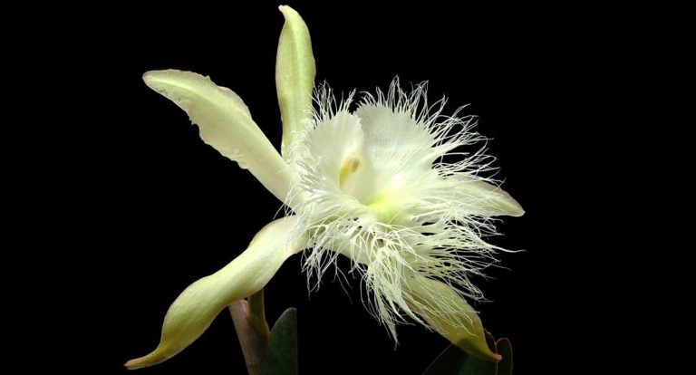

Honduras
Historia
Honduras es un país de América Central con costas en el mar Caribe al norte y en el océano Pacífico al sur. En el bosque tropical cerca de Guatemala, el antiguo sitio ceremonial maya de Copán tiene jeroglíficos tallados en piedra y estelas, altos monumentos de piedra. En el mar Caribe, se encuentran las Islas de la Bahía, un destino para el buceo que forma parte de la Barrera de Coral Mesoamericana.
Extensión territorial
La extensión territorial de Honduras, comprendiendo todas sus islas, es de 112 492 km².
Símbolos patrios
La Guacamaya o Guara Roja
Pino
Orquídea
Departamentos
Atlántida, Colón, Comayagua, Copán, Cortés, Choluteca, El Paraíso, Francisco Morazán, Gracias a Dios, Intibucá, Islas de la Bahía, La Paz, Lempira, Ocotepeque, Olancho, Santa Bárbara, Valle, Yoro.
Lugares turísticos
Cuevas de Talgua
Lago de Yojoa